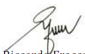

The art and importance of scorekeeping is one ofbaseball’s fundamental pillars, which tracks and enterseach pitch and play into the official record providing thefoundation for the birth of many statistics and analyses thatare closely bound to the sport of baseball, and help shapethe competition itself. It is the scorer’s chief task toaccurately and objectively interpret and transcribe thegame’s results on the field.
Scorekeeping and statistics are perhaps greater tiedto baseball than to any other sport, and they are the basisnot only for the players, managers and teams to evaluateand compare performance and to predict tendencies, whichhelp form strategies, but scoring and statistics also form alarge part of the fan experience that makes the sport ofbaseball unique.
This Scoring Manual will remain a powerful resourceto standardize the procedure of universally recording thegame of baseball. As the sport of baseball continues tobreak ground into new territories, reliance on such amanual will only increase and help promote the integrity of our sport ensuring that a particular play will be recordedthe same across the globe.

Riccardo
Fraccari
Président
World Baseball Softball Confederation